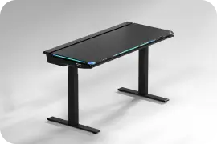
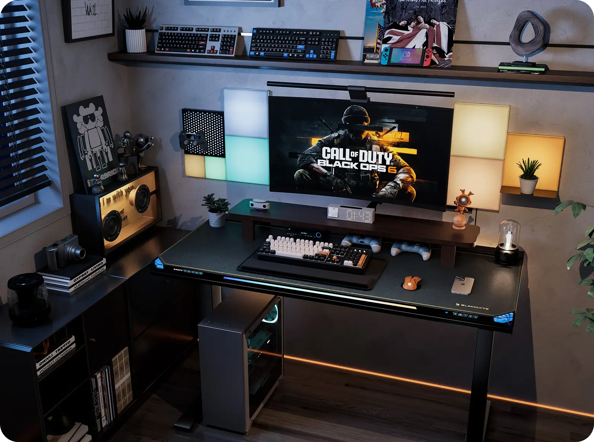

搬家那天，我用一台会呼吸的游戏桌迎接了新赛季
从纸箱里扛出 Atlas 游戏桌的那一刻，我以为只是换了个能升降的桌子——直到打开 Atlas Driver 折腾起 RGB 效果，才发现这玩意儿远不止"灯多"这么简单。
搬家第三天，我还在跟一堆没拆的纸箱较劲。墙上的洞刚补好，网线从地板缝里扯出来还没理，Atlas 游戏桌孤零零搁在房间中央，周围堆满了键盘包和显示器支架。
这张桌子是我攒了三个月工资买的，当初在blacklyte官网上被五杀灯带的短视频种草，下单时只想着"能升降、RGB、配得上我那台 4070"。快递到的时候包装比想象中沉，拆箱费了半小时，但装起来比预想的快——四根桌腿拧上去、插好控制盒、用蓝牙连上电脑，就完事了。
之前从官方下载了 Driver 安装包，装好桌面就多了这个蓝紫色图标。然后我点开了它。
它在等我——Driver 打开的瞬间
Atlas Driver 启动得比我预想的快，界面是左右分栏的单窗口设计。左侧最上方是一个设备卡片，显示着"Atlas 001"、实时高度（当时还没调，默认 72cm）、蓝牙图标亮着——连接正常。下面一溜五个模式按钮：Game Sync、Screen Sync、Rhythm Sync、Scenes、自定义。最底部还有三个一键切换的快捷灯效：白光、呼吸、彩虹。
右侧主区默认进的是 Scenes 模式，我数了数卡片——只有三张。右下角有个"下载更多场景"的按钮在闪，标着"还有 5 种"。我当时没管，直接点了左侧的"自定义"。
默认灯光是一条固定的纯白色灯带，亮得刺眼。我想先调个柔和点的，点了效果类型里的"呼吸"——整条灯带开始慢节奏地一亮一暗，周期默认 3 秒。舒服多了，但还是觉得差点意思。
折腾自定义：从"不会调色"到存了三个预设
我在 Valorant 里主玩 Fnatic 战队的配色，橙黑相间的那种。之前用的键盘鼠标都是自定义成橙黑流动效果，桌子也应该跟上。
Driver 的颜色选择器比我想象的友好——说实话很多细节都是后来去blacklyte文档翻了一下才搞明白，比如分段控制其实超过四段会串色。色轮可以直接拖，也能精确输 RGB 数值。Fnatic 橙我记得是 (255, 140, 0)，直接敲进去，灯带唰地一下变成了那个暖橙色。然后效果类型选"流动"，速度设成慢，方向左往右——光带从桌头慢慢移到桌尾，像一条会爬的橙蛇。
接下来是分段控制。Driver 里有个开关叫"分段控制"，打开后可以拖分隔线把灯带分成几段，每段独立颜色和效果。我分了两段：段 1 是刚才的 Fnatic 橙加流动，段 2 是深灰色加微弱呼吸。一整条灯带就这样两头橙、中间灰，光带只在前半段流动，后半段若隐若现——跟我键盘鼠标的效果对上了。
顶部有个 ⭐ 按钮，点一下可以存预设。我命名为"Fnatic 主场"。后来又折腾了两个：一个是房间配色（墙是深蓝色，灯带调了协调的深蓝呼吸），一个是春节红金（临时救急用的）。现在切效果直接在托盘右键菜单里选，不用每次开主界面。

默认没发现的好东西
我后来才慢慢摸出 Driver 里藏着的几个好用设置。
托盘图标的右键菜单比主界面常用多了——"暂停/恢复所有灯效"晚上加班时一键关灯但保持连接；"临时提升亮度至 100%"拍视频截图的时候用；"切到下一个场景"在 Scenes 模式下轮播不同氛围灯效。我把它固定到了 Windows 任务栏可见区，日常调灯光根本不用开主界面。
设置菜单里有几个开关值得注意：开机自启 Driver 要开，不然 Game Sync 打游戏时不会自动生效；以管理员身份运行也要开，因为 Game Sync 要读游戏进程内存才能检测事件；灯效过渡时间我调到了 300ms——之前默认太短，击杀时灯效切换会闪烁，300ms 刚好跟游戏节奏同步。
Scenes 那三张默认卡片是"专注""放松""游戏"三个基础场景，下载完剩下五个之后多了"电影""派对""深夜""黎明""脉冲"——每个都是预设好的整套灯效，不用自己调。深夜那个我睡前偶尔用，暖黄色呼吸，不刺眼。
NFC 那张小卡片
包装里有张黑底白标的小卡片，我一开始以为是保修卡，随手扔抽屉里了。后来翻说明书才知道那是 NFC 绑定卡——用手机贴一下就能自动录入产品信息、注册保修，还送积分。
我在 App Store 装了 Blacklyte App。说实话，2.0 重构之后这个 App 塞了好多东西：首页是游戏资讯和电竞赛事，商城是积分兑换，我的是设备管理——跟硬件控制相关的只有"设备"标签，其他模块其实跟游戏桌无关。但硬件控制那部分够用，至少能看桌体的连接状态和电量。
NFC 绑定的操作出乎意料地简单：App 里进"我的 → 我的产品"，点 NFC 绑定，手机背面对准卡片贴了一秒多——震动提示，App 自动识别出了产品型号和序列号，确认后点"绑定"。保修期限显示 2 年，有效期从购买日起算，积分 1000 分秒到账。说实话积分商城里的东西还没看到什么特别想要的，但至少保修注册这一步不用手动输序列号了。
游戏开始的那一刻
搬完家第二天我就忍不住开了排位。Valorant 启动的时候，Driver 自动切入了 Game Sync 模式——我在设置里开了开机自启和游戏同步内存监听，所以只要游戏进程起来，灯效就自动接管。
开局手枪局，我在 B 点蹲了整整三分钟没动静，灯带是默认的蓝绿色呼吸。然后看到 A 点传来枪响——不知道为什么，我的灯带突然开始快速闪烁，频率大概 5Hz。我愣了一下才反应过来：那是队友击杀敌人的时候触发的效果。Driver 在 Game Sync 模式里会监听游戏进程，检测到特定事件（击杀、受伤、安装拆除、回合开始结束）就触发预设的灯效。
那一局我打得特别顺，五杀的时候灯带直接拉满了橙红色流动，持续了大概三秒钟才消下去。那瞬间我意识到，这桌子带来的不只是"能升降"和"灯多"——它把游戏里的事件变成了周围环境的反馈，从耳朵里的声音延伸到了眼睛的余光里。
三个月后的复盘
三个月过去了，纸箱早就拆完了。网线理进了踢脚线的线槽里，墙上的洞补完刷了漆，Atlas 游戏桌固定在房间角落，高度 72cm 是我的坐姿最舒服的高度。
Fnatic 预设是用得最多的，偶尔周末换房间配色。托盘图标固定在任务栏，晚上加班一键关灯，深夜偶尔切到 Scenes 的"深夜"暖黄色。Game Sync 打排位时自动生效，我甚至没再手动调过它的设置。
Blacklyte App 偶尔打开看看保修还剩多久，积分涨到了 3200 分——签到加活动送的。资讯模块我基本不看，感觉跟硬件无关，但也没删，万一以后有活动能用。
回想起来，最初下单时我脑子里只有"升降 + RGB"两个关键词。但 Driver 的自定义功能、Game Sync 的实际效果、NFC 卡片的便捷、还有那个藏在托盘右键里的快捷菜单——这些细节加起来，让这张桌子从一件"我买了个好东西"的消费体验，变成了"它在等我、它在陪我"的日常陪伴。
或许这就是这类产品真正的价值吧：不是某一个参数有多亮眼，而是当你忘了它的存在时，它还在那里安静地做着它该做的事。
喜欢折腾的朋友如果需要参考类似玩法的参数笔记，这套 Blacklyte 相关的资料在 GitHub、Gitee、GitCode 上都有同步，按需访问就行。
